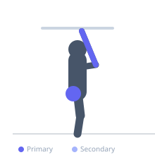
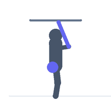

Exercise guide / Wrist Roller
Wrist Roller
The wrist roller uses a short bar with a rope attached to the center, weighted at the rope's end. The lifter holds the bar at arm's length (or at shoulder height) and winds the rope upward by alternately rotating each wrist, then unwinds it. This continuous motion trains both wrist flexors and extensors through their full range repeatedly, producing an intense forearm pump. It is one of the most demanding forearm exercises available.
Primary muscles
flexor carpi radialis
flexor carpi ulnaris
extensor carpi radialis
Secondary muscles
Equipment
Medicine Ball


Starting position
- Hold the wrist roller bar with both hands, arms extended forward at shoulder height. The rope and weight hang below.
Setup
- Attach the desired weight to the rope. Hold with shoulder-width grip.
Steps
- Step 1: Begin with arms extended forward at shoulder height, weight hanging.
- Step 2: Rotate one wrist forward (overhand roll) to wind the rope upward.
- Step 3: Alternate wrists, continuing to roll until the weight reaches the bar.
- Step 4: Reverse the direction, slowly unrolling the rope back to the hanging position.
Coaching cues
- Arms stay level
- Feel the burn in the forearms
- Control the unroll
Breathing
- Breathe freely throughout — focus on rhythm.
Range of motion
- Full wind up and full unwind — do not stop partway.
Tempo
- Moderate and controlled
Common mistakes
- Dropping the arms during the roll
- Using too much weight causing grip failure
- Rolling too fast to feel the muscles work
Safety
- The rolling motion is demanding on the forearm tendons — start very light
Training
- hypertrophy: 3–5 reps
- hypertrophy: 3–4 sets
- Rest: {'hypertrophy': 90}